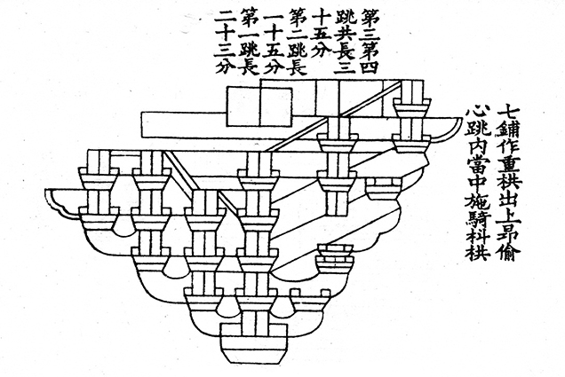
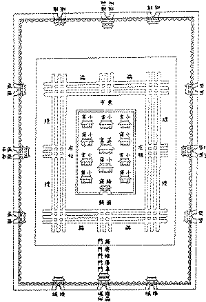

Ancient Chinese architecture represents a profound integration of scientific knowledge, cultural philosophy, and artistic expression. Beyond the physical structures themselves, a rich body of scholarly works emerged to record, analyze, and standardize architectural knowledge. These representative works not only preserved technical expertise but also promoted systematic thinking and scholarly traditions in ancient China. Together, they form an invaluable intellectual foundation for understanding China’s architectural achievements.

Yinzao Fashi Building Manual
One of the most influential scholarly works is Yingzao Fashi (《营造法式》), compiled by Li Jie during the Northern Song Dynasty in 1103. This text is widely regarded as the earliest comprehensive architectural manual in China and one of the most important in the world. It established standardized construction methods, modular measurements, material classifications, and cost calculations. The book reflects advanced applications of mathematics, mechanics, and material science, and it institutionalized architectural knowledge in a scholarly form. Yingzao Fashi played a crucial role in ensuring consistency, safety, and efficiency in construction across the empire.

City Planning in 'Kao Gong Ji'
Another representative work is Kao Gong Ji (《考工记》), an ancient text from the Zhou Dynasty that documents craft and engineering principles. Although broader in scope than architecture alone, it contains detailed descriptions of city planning, construction techniques, and functional design. The work emphasizes precision, division of labor, and adherence to standards, reflecting early scientific management and technical rationality. Kao Gong Ji illustrates how architectural knowledge was closely tied to governance, social order, and technological development.
Historical records such as Shiji (《史记》) by Sima Qian also contribute valuable insights into ancient architectural projects. While primarily a historical chronicle, it documents large-scale constructions such as palaces, mausoleums, canals, and city walls. These records help scholars understand the organizational, technological, and social dimensions of architectural production in ancient China, highlighting the role of state planning and scientific coordination.
The representative works of ancient Chinese architecture are not only historical documents but also enduring symbols of scholarly excellence. By studying and promoting these texts, we gain deeper insight into the scientific spirit, cultural values, and intellectual achievements that shaped ancient Chinese architecture and continue to influence the modern world.